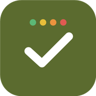
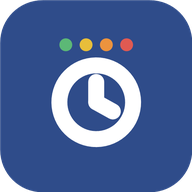
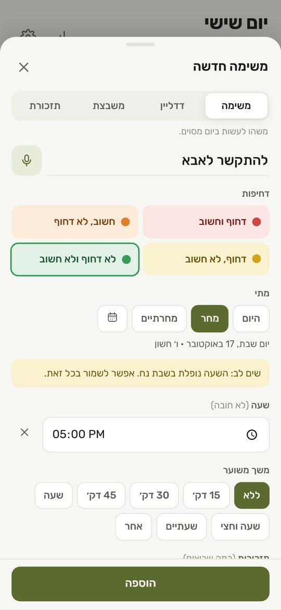
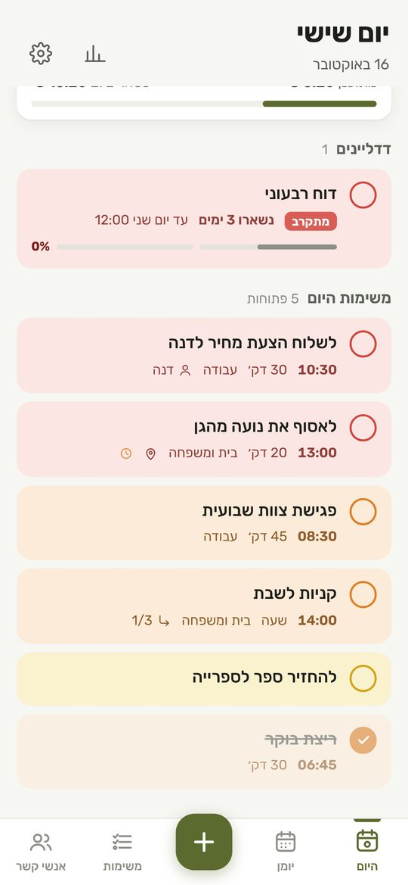
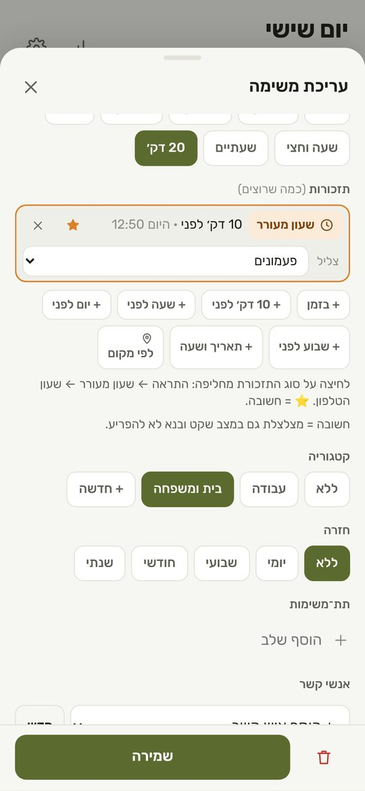
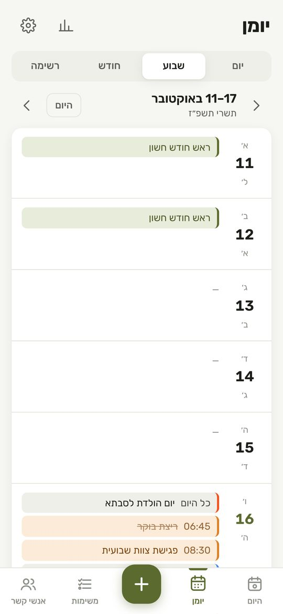
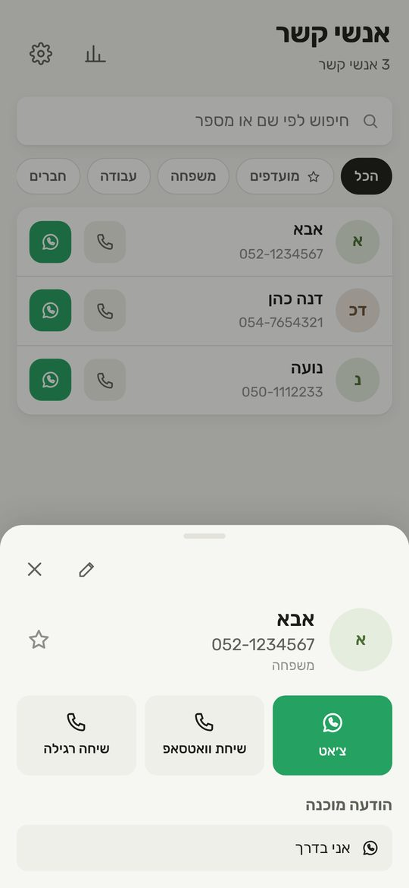
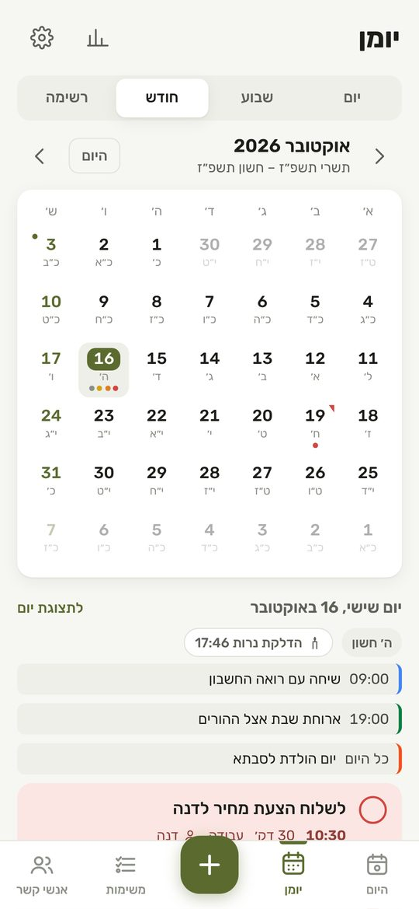
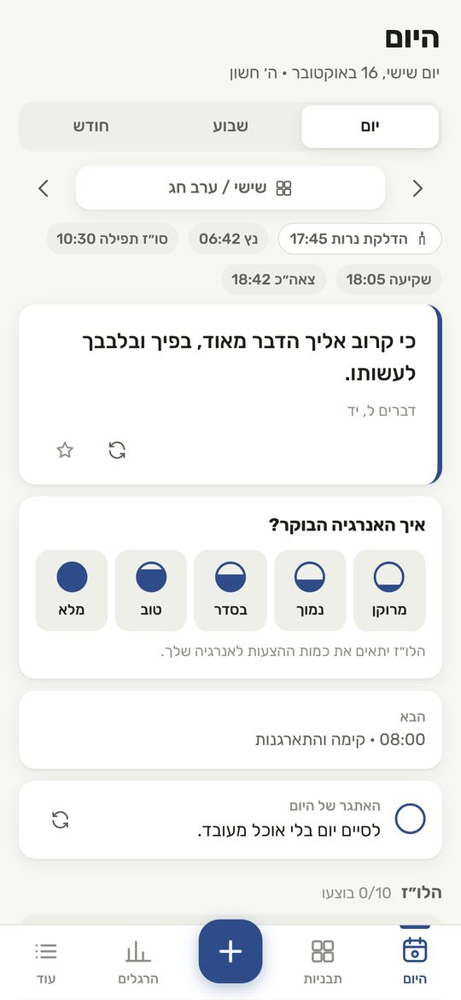
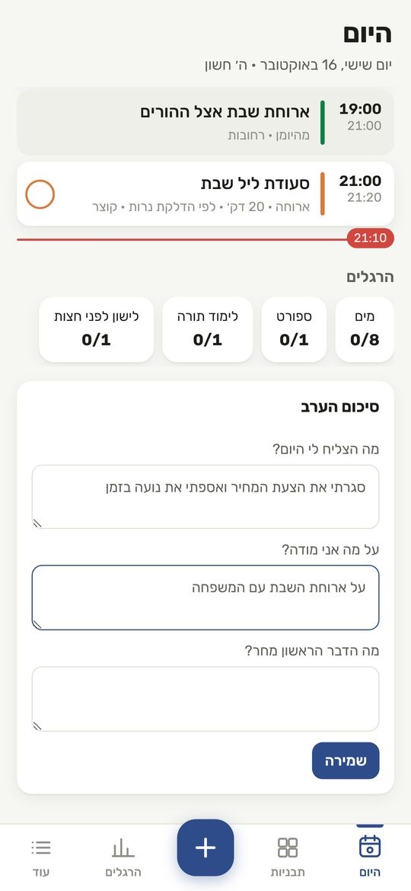

שילולו״ז · שילולוז דיילישתי אפליקציות בעברית מלאה שמסדרות לך את היום: משימות, לו״ז, תזכורות ושעון מעורר, יומן הטלפון, וואטסאפ וזמני שבת — ותכנון יום רגוע מהבוקר ועד סיכום הערב.
משימות, פגישות ותזכורות על ציר אחד — כדי שתראה בכל רגע מה עכשיו, מה הבא, וכמה זמן באמת נשאר לך.
מסך "היום" מחבר משימות, אירועים מהיומן ותזכורות לציר זמן אחד, עם סיכום בוקר קצר וחישוב של כמה זמן מתוכנן מול כמה נשאר.
מקלידים או מכתיבים בקול כמו שמדברים. האפליקציה מבינה תאריך, שעה ומשך, ומכינה את המשימה. אם השעה נופלת בשבת או בחג — היא מזהירה.
״מחר ב-5 להתקשר לאבא״ ← יום שבת · 17:00 · ⚠️ שבת
כל משימה מקבלת מקום במטריצה של דחוף וחשוב, בצבע. דדליינים מקבלים ספירה לאחור ואחוז התקדמות, ומשימות גדולות מתפרקות לשלבים.

לכל משימה כמה תזכורות שרוצים: התראה רגילה, או שעון מעורר שמצלצל במסך מלא גם כשהטלפון נעול, עם נודניק. תזכורת חשובה מצלצלת גם במצב שקט.

סנכרון דו-כיווני עם יומן הטלפון — Google Calendar, Samsung ואחרים. האירועים מופיעים בלו״ז, משימות עם שעה נכנסות ליומן, וכשמזיזים אירוע ביומן, המשימה זזה איתו.

מצרפים איש קשר למשימה, וממנה פותחים וואטסאפ, שיחה או שיחת וואטסאפ. יש גם הודעות מוכנות כמו "אני בדרך" ו"אחזור אליך בהקדם".

תאריך עברי בכל יום, חגים, פרשת השבוע, הדלקת נרות והבדלה לפי המיקום שלך — ואזהרה לפני שמשבצים משהו בשבת או בחג.
יום שישי, ה׳ חשון · הדלקת נרות 17:46
אפליקציה אחות לתכנון היום: לא עוד רשימת משימות, אלא יום מחולק לבלוקים, עם משפט לבוקר, הרגלים, וסיכום ערב שקט. אותו חשבון, אותן משימות, אותו יומן.
תבניות לימים שונים — יום עבודה, שישי, שבת, חופש — שמזוהות לבד לפי הלוח העברי, עם זמני היום ההלכתיים לפי המיקום.

משפט מהמקורות, ציטוט או משפט קצר, ואתגר קטן ליום. בבוקר בוחרים את רמת האנרגיה, והלו״ז מתאים את עצמו.

שלוש שאלות קצרות: מה הצליח, על מה אני מודה, ומה הדבר הראשון מחר. וסטטיסטיקה שבועית שמראה את הדרך.
יום שלם עם שתי האפליקציות, מהבוקר עד הלילה, בסרטון קצר.
שום דבר. שתי האפליקציות חינמיות לגמרי ובלי פרסומות.
לא. כרגע האפליקציות זמינות לאנדרואיד בלבד.
שולחים לי הודעת וואטסאפ בכפתור כאן, ואני שולח קישור להתקנה עם הסבר קצר.
לא. אפשר להשתמש בלי חשבון בכלל. חשבון צריך רק כדי לסנכרן בין הטלפון, המחשב ושילולוז דיילי.
לא חייבים. שילולו״ז היא לניהול המשימות והלו״ז, דיילי היא לתכנון היום. ביחד הן משלימות זו את זו.
לחיצה אחת פותחת וואטסאפ עם הודעה מוכנה. שולחים, ואני חוזר אליך עם קישור להתקנה.